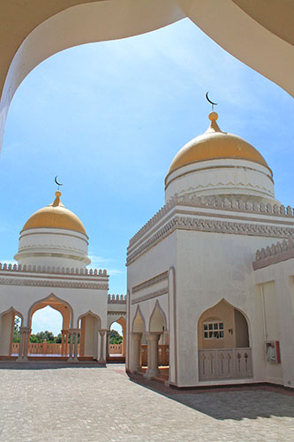

The Grand Mosque Highlights



The Grand Mosque of Cotabato is a majestic structure that serves as a place of worship for the Muslim community. It can accommodate up to 15,000 worshippers at a time, making it a prominent religious landmark in the Philippines. It blends modern and traditional Islamic designs that attract visitors from all over the world.
Aside from its religious purpose, the mosque is a popular tourist and cultural destination. Tourists are drawn to its golden domes, elegant minarets, and the tranquil atmosphere it provides. The mosque’s surroundings offer a peaceful setting perfect for sightseeing and reflection.
Built with the help of the Sultan of Brunei, the mosque stands as a symbol of strong ties between Brunei and the Philippines. It also promotes cultural appreciation and religious harmony in Mindanao. Local and international visitors alike are welcome, provided they follow proper dress code and etiquette.